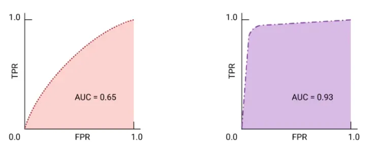

Trabalho de Cálculo I — Ciência de Dados e IA (2º Semestre)
Pedro Henrique, Arthur Kremer, Guilherme Santos, Gabriel Sartori
A integral, com sua interpretação clássica de área sob a curva, torna-se uma ferramenta importante para quantificar grandezas acumuladas. Na avaliação de modelos de classificação em Inteligência Artificial, a métrica AUC-ROC (Área Sob a Curva ROC) utiliza esse conceito para resumir, em um único número, o desempenho geral de um classificador ao longo de todos os limiares de decisão possíveis, sem ficar preso a um único ponto de corte.
A curva ROC plota o desempenho de um modelo em diferentes limiares. Ela relaciona:
TPR = TP / (TP + FN)
FPR = FP / (FP + TN)
Um modelo ideal se aproxima do canto superior esquerdo (TPR = 1, FPR = 0). Já um modelo aleatório tende a produzir uma curva próxima da diagonal, com AUC perto de 0,5.
A AUC é a área sob essa curva, calculada pela integral definida de 0 a 1 em relação ao FPR:
AUC = ∫01 TPR(FPR) · d(FPR)
A integral faz uma soma contínua da taxa de verdadeiros positivos ao longo de todas as possíveis taxas de falsos positivos, capturando o desempenho global do classificador.
Comparação visual entre dois modelos usando AUC
O modelo da esquerda tem AUC menor (≈0.65), indicando separação ruim entre as classes. O modelo da direita tem AUC maior (≈0.93), indicando excelente desempenho global.
A métrica AUC é muito usada na prática porque ela avalia o modelo em todos os limiares possíveis, sem ficar presa a uma escolha específica. Isso é especialmente importante em aplicações reais de Inteligência Artificial, onde o custo de errar pode ser diferente para cada tipo de erro.
Nessas situações, a AUC ajuda a escolher o modelo que consegue equilibrar melhor acertos e erros, mostrando como o cálculo integral aparece diretamente em decisões do dia a dia em Ciência de Dados e IA.
Na prática, a curva ROC é obtida a partir de pontos discretos. Assim, a integral é aproximada usando a Regra do Trapézio. Vamos calcular a AUC de um exemplo simples com os seguintes pontos:
| FPR (x) | TPR (y) |
|---|---|
| 0.0 (P0) | 0.0 |
| 0.2 (P1) | 0.5 |
| 0.4 (P2) | 0.7 |
| 1.0 (P3) | 1.0 |
Modifique os valores de TPR para cada ponto (mantendo entre 0 e 1) e clique em "Calcular AUC do simulador" para ver como a área sob a curva e a curva ROC mudam.
Curva ROC aproximada para os valores de TPR escolhidos. A área sob essa curva é a AUC.
Clique em "Próximo Passo" para ver o cálculo da área de cada trapézio e a formação da AUC.
A AUC-ROC mostra como o Cálculo Integral está diretamente ligado à prática da Ciência de Dados e da Inteligência Artificial. Em vez de avaliar um modelo em um único limiar, a integral da curva ROC gera uma medida global de desempenho.
Aplicações Reais: